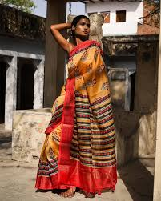

An eminent geographical indication, Chanderi saree find their home in the state of Madhya Pradesh.
The Chanderi saree is a traditional saree made from silk or cotton in Chanderi, Madhya Pradesh, India. The tradition began in the 13th century with Koli weavers, and the weaving culture of Chanderi emerged between the 2nd and 7th centuries. The saree is known for its gold and silver brocade, fine silk, and opulent embroidery. Chanderi sarees are lightweight and have a shimmery texture.
Chanderi sarees are made in four stages: 1. Procurement: The raw materials are purchased, such as cotton yarn from Coimbatore and Jaipur. 2. Dyeing: The threads of the warp and weft are dyed according to the designs. 3. Warping: The warp yarns are wound around bobbins. 4. Passing the warp: The fabric is woven on traditional wooden looms.
